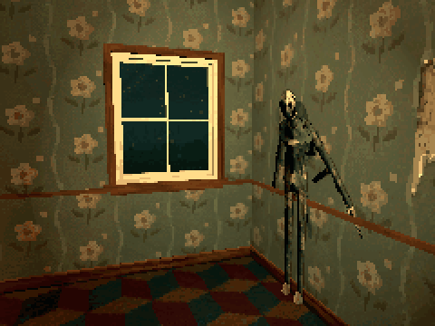

Tutorials › Make a Monster Step Out of a Wall
How to Make a Monster Step Out of a Wall in Godot 4
A monster that waits flat on a wall, steps out, and slips back unseen.

A monster that waits pressed flat on a wall, steps out of it when the player comes near, and slips back in once the camera sees neither the monster nor its place on the wall. It comes out again only after the player has walked away and come back.
Script: wall_ambush.gd (MIT) · Godot 4.3 or newer · its folder on GitHub
How to use it
- Make the monster a CharacterBody3D with its model under it, turned to face the body's -Z. The model's AnimationPlayer needs an
Emergeclip that starts pressed flat on a wall, and anIdleclip. - Add
wall_ambush.gdto the CharacterBody3D and stand it with its back to the wall, its origin a few centimetres from the wall's face.trigger_rangeis how near the player must come;step_outis how far the Emerge clip carries the body out of the wall. - Put the player in the group
player.
What it needs
- A rigged monster with those two clips; nothing else.
Try it free
The Cordatix PSX Horror Free Sampler has Papered, a figure of peeling wallpaper, with all ten of its clips: try the script with it right away.
How it was tested
In Godot 4.3 and 4.7.2, with Papered from the free sampler: it waits on its wall, steps out along its facing when the player comes near, plays Idle once out, and slips back when the camera looks away from it and its place.
The code
extends CharacterBody3D
## How to Make a Monster Step Out of a Wall in Godot 4
## Cordatix Godot 4 PSX tutorials, MIT licensed: https://github.com/GoldenSparrow-Dev/cordatix-godot-psx-tutorials
## The devlog: https://cordatix.itch.io/haunted-psx-monsters/devlog/1724922/how-to-make-a-monster-step-out-of-a-wall-in-godot-4-haunted-psx-monsters
## How close the player must come, and how far the Emerge clip carries the body out of the wall.
@export var trigger_range := 2.5
@export var step_out := 0.32
@onready var anim: AnimationPlayer = find_child("AnimationPlayer", true, false)
var waiting := true
var emerging := false
var armed := true # back in the wall, it waits for the player to leave before it can step out again
var _home: Transform3D
func _ready() -> void:
_home = global_transform
hide_in_wall()
## Pressed flat on the wall: Emerge's first frame, held. The clip plays and seeks before it pauses (a paused
## player's seek would leave the skeleton as it was).
func hide_in_wall() -> void:
global_transform = _home
waiting = true
emerging = false
anim.play("Emerge")
anim.seek(0.0, true)
anim.pause()
## Near enough, it steps out: Emerge plays on, and the body moves out along its facing at the clip's pace, with no
## collisions (its capsule starts inside the wall).
func _physics_process(delta: float) -> void:
var player := get_tree().get_first_node_in_group("player") as Node3D
if waiting:
var near := player != null and global_position.distance_to(player.global_position) < trigger_range
if near and armed:
waiting = false
emerging = true
anim.play("Emerge")
elif not near:
armed = true
return
if emerging:
var length := anim.get_animation("Emerge").length
global_position += -global_transform.basis.z * step_out / length * delta
if not anim.is_playing():
emerging = false
anim.play("Idle")
## Once the player looks away from it and from its place on the wall, it slips back in.
func _process(_delta: float) -> void:
if waiting or emerging:
return
var cam := get_viewport().get_camera_3d()
if cam and not cam.is_position_in_frustum(global_position + Vector3.UP) \
and not cam.is_position_in_frustum(_home.origin + Vector3.UP):
hide_in_wall()
armed = false
The devlog and the pack
The step-by-step walkthrough is the devlog How to Make a Monster Step Out of a Wall in Godot 4 (Haunted PSX Monsters) on itch.io, written for Cordatix PSX Horror Monsters, a PS1-style asset pack by Cordatix for Godot 4, Unity, Unreal and Blender.